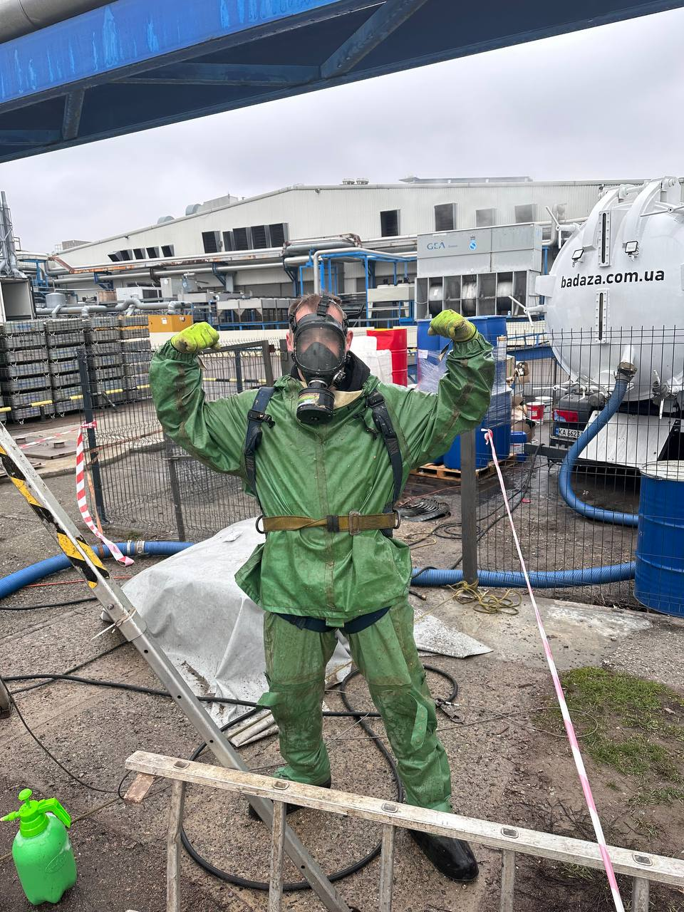
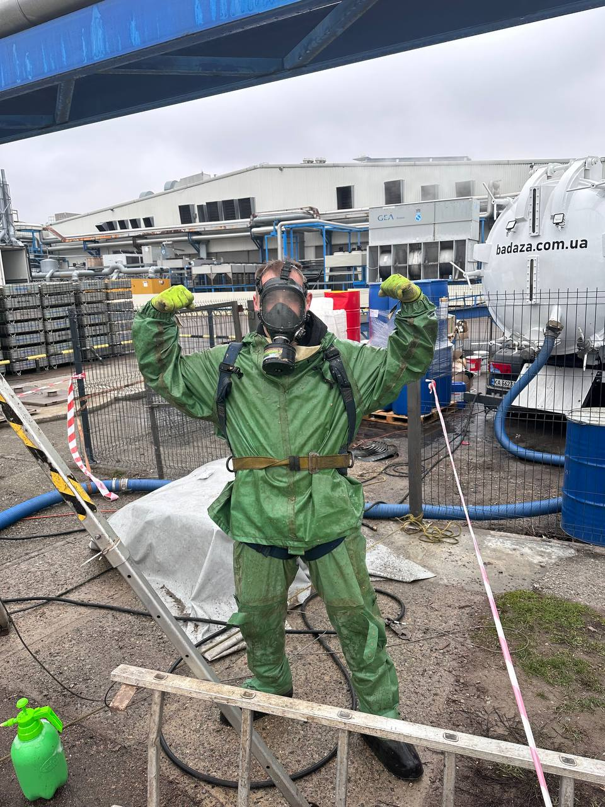
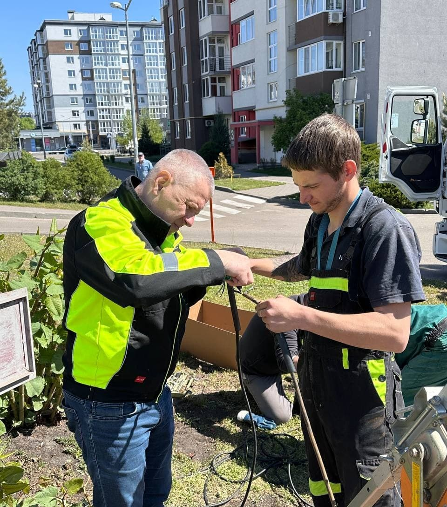
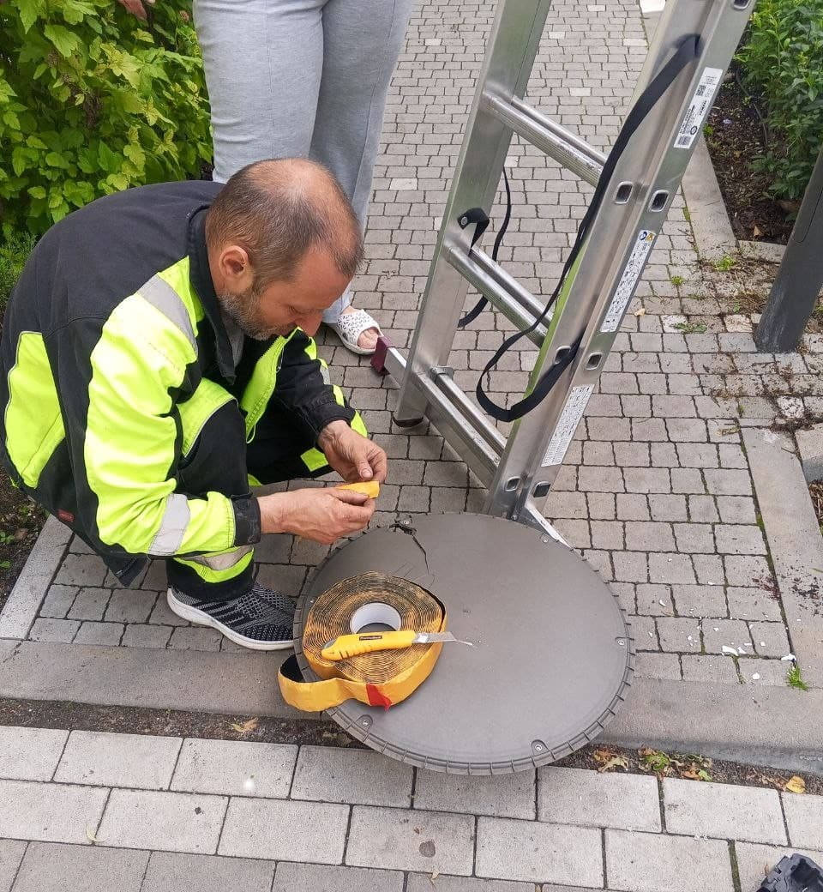
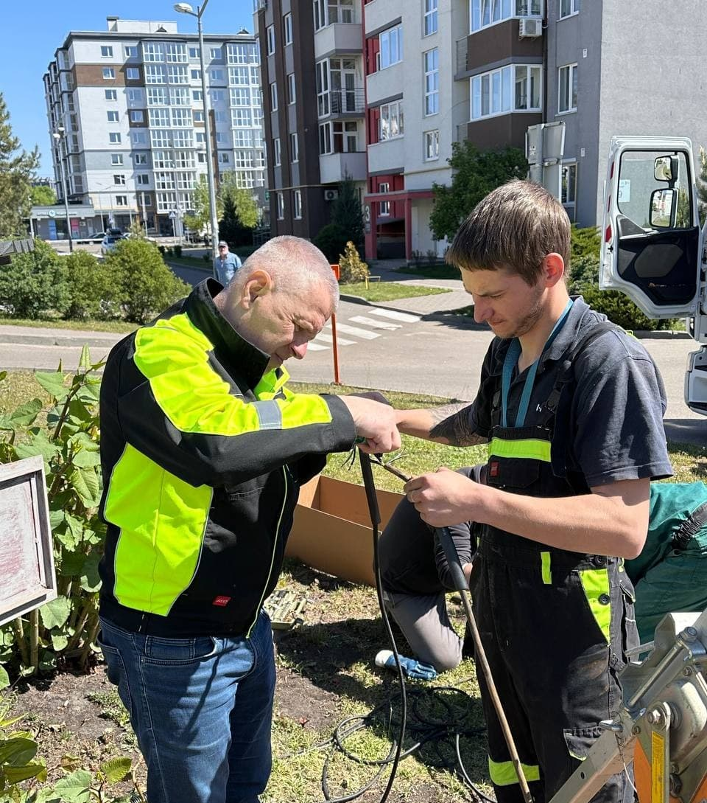
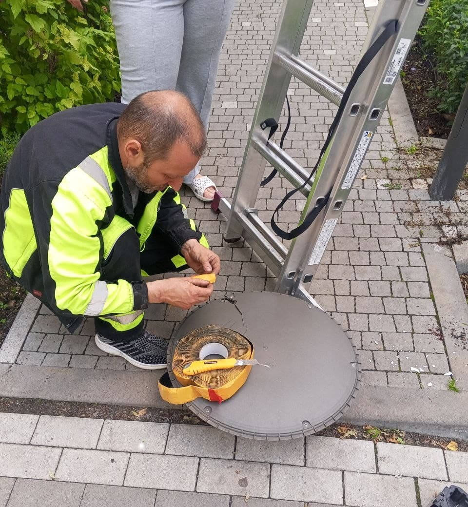

Сантехніка
В "Укр Житло Сервіс" ми віддані вашому комфорту, безпеці та справній роботі всіх інженерних систем. Наша команда досвідчених сантехніків надає надійні послуги з ремонту, встановлення та обслуговування сантехніки у житлових будинках, офісах і комерційних приміщеннях. Ми працюємо швидко, акуратно та з дотриманням усіх технічних норм.
Ремонт та обслуговування сантехніки
Усунення протікань, заміна кранів, перевірка труб, очищення засмічень.
Встановлення нового обладнання
Монтаж унітазів, ванн, бойлерів, змішувачів та іншої сантехніки.
Системи водопостачання і опалення
Прокладка труб, підключення насосів, встановлення радіаторів.
Аварійні виклики
Швидке реагування на прориви труб, засмічення та інші несправності.
Обслуговування будинків
Регулярна перевірка інженерних систем і профілактичне обслуговування.
Консультації та підбір
Професійні поради, допомога з вибором обладнання, планування систем.
З "Укр Житло Сервіс" ваша сантехніка працює надійно — ми дбаємо про кожну деталь!


 



 



×